第一章 · TaskGo 修繕與工程
工地人不是不懂科技，是以前的科技不懂工地
給工程行、工班、修繕與搬家團隊。管理用網頁，現場收進 LINE。讓工程專案管理更簡單。
匠管做三套系統，都從 LINE 開始。先看各解決什麼、客戶可以做什麼，再看已經接上的 API，最後看這三個入口怎麼收成一個生態。左右滑或按下一頁，一章看完再進下一章。
「系統到底好不好，不是我們自己說了算，而是現場每天願不願意用。」
匠管執行長 陳炳寬｜經濟日報 2026/09/16不是叫產業改變習慣，是讓工具進到原本就在用的流程。
LINE 當入口。打卡、報修、送洗、通知，都在已經會用的地方完成。
照片、簽名、報價、進度、收付款掛在同一張單上，不會被群組洗掉。
派工推薦、洗標辨識、招租文案、每日待辦，用的是現場留下的資料。
三個產品各自服務自己的產業，合作發生時才串接。不會為了整合成一個品牌，去改業者原本的店名與做法。
給工程行、工班、修繕與搬家團隊。管理用網頁，現場收進 LINE。讓工程專案管理更簡單。
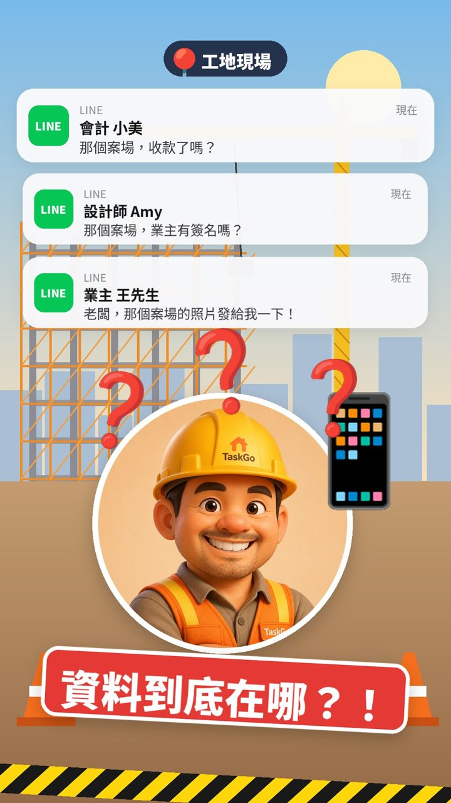
依現場三種角色。後勤在網頁做，師傅與業主用連結或 LINE，不必另外裝 App。
派工行事曆、審核施工回報、看出勤與每日報告、看成本與毛利、管修繕和搬家。
LINE 打卡、拍照與簽名回報、做場勘、請假、叫料。完工紀錄留在同一張單。
看進度與照片、線上簽報價、驗收簽名。少打一輪「做到哪了」。
打卡、今日任務、拍照回報、電子簽名、請假、請款。老師傅不用另外裝 App。
派工、場勘、報價、施工、驗收、請款在同一張單。錢和紀錄不斷鏈。
進度與照片給業主看。資訊透明，就少接很多「做到哪了」的電話。
依技能、證照、位置、工作量推薦人選，並產生任務描述與工時預估。
點工Go 用地圖找師傅；服務市集讓發包需求上架、服務商報價接單。
一般、進階、AI、客戶查看、員工 LINE 按模組組合，用多少租多少。
每一支都完整顯示，點一下播放。畫面中的案名與數字為示範資料。
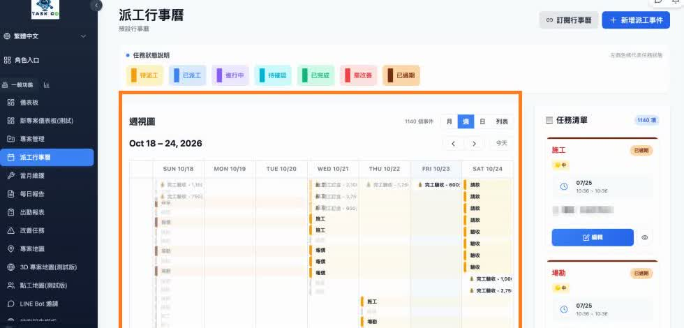
「Task Go 的初衷就是要讓沒有 IT 背景的師傅，也能用得安心、用得開心。」
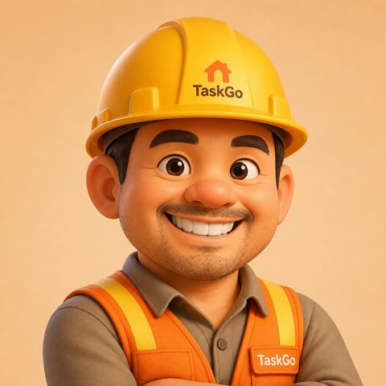
短句、講現場。派工與回報的事，用工地聽得懂的話說給你聽。
與達觀共同推動。房東、包租代管、房客，用 LINE 把租屋日常收回同一個地方。
收租、續約、報修、退租日期散在腦袋和 LINE。每天都在翻對話。
轉帳憑證一張張核。電費另外算，月底才發現對不起來。
自己找師傅，照片和地址傳來傳去。三方看到的進度不一樣。
押金扣款口說無憑。點交沒留下照片，事後才吵。
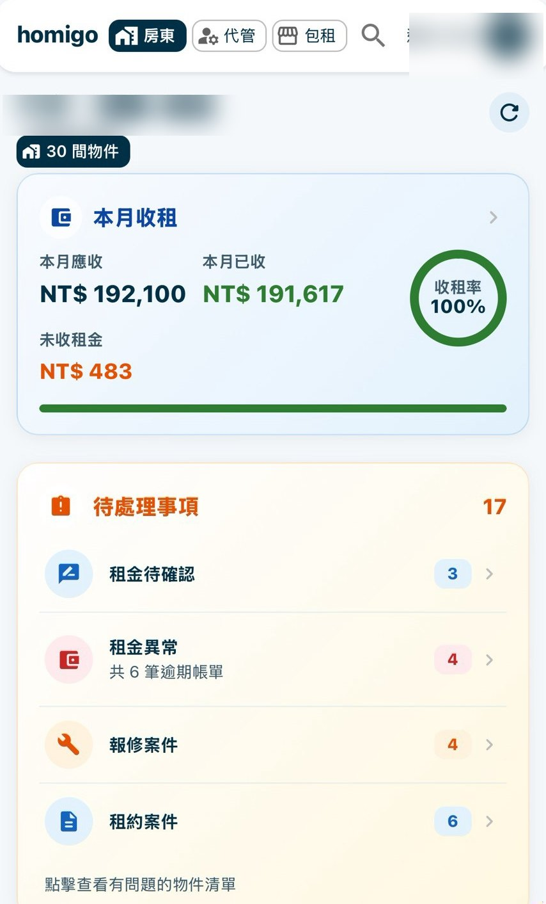


畫面取自 Homigo 的 LINE 頁面。姓名已遮，金額為畫面中的示例。
每一段都在 Homigo 裡有紀錄，房東不用再翻聊天室找證據。
LIFF 登入、選單、推播。打開 LINE 就能管房、報修、查租金。
收租、續約、報修做成每日待辦推給房東。自管、代管、包租三種身分可切換。
房客拍照報修。房東決定找師傅、自己處理、房客自修或暫緩，進度雙方看得到。
繳租上傳與審核、逾期催繳、水電表。銀行交易與租金、電費自動匹配。
雙向評價、HomiScore、徽章與點數。好房客不再只靠一句「還可以」。
報修直接建立 TaskGo 案號，由修繕聯盟工班承接，結案報告回到房東端。
新增物件、邀請房客、租約電子簽名、審核繳租、處理報修、入住點交與退租。
上傳繳租憑證、拍照報修並看進度、抄電表、確認入住與退租結算。
審核收租與催收、派報修、招租帶看、在退租中心結案，也能加團隊成員。
串接 TaskGo。直接指定廠商，或公開詢價比價。案號、報價、施工照片回到這一張單。
有認識的師傅，走 Homigo 手動路徑。進度一樣寫在這張報修上。
授權房客處理。完工上傳發票，請款或折抵。
先觀察或結案。決定本身有紀錄，不是沒回。
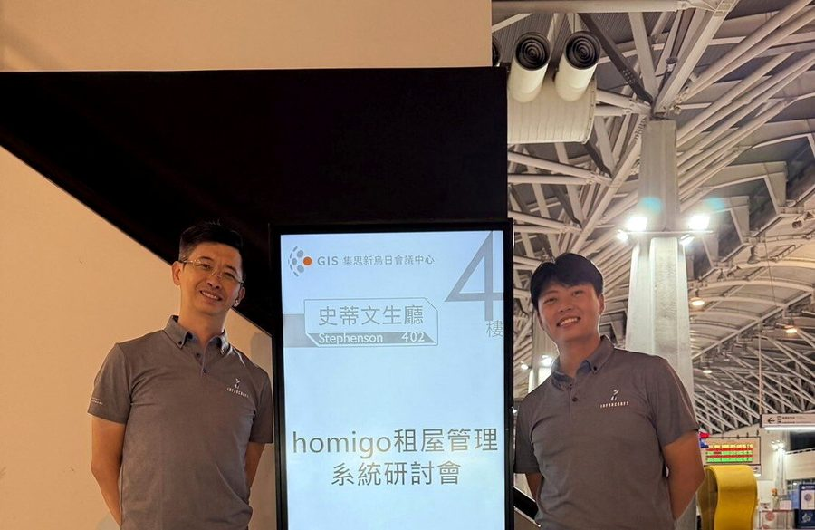
「未來企業競爭將不僅是系統功能，而是管理能力的數位化。」
先同理租屋的混亂，再把事情收回同一個地方。
洗滌產業的智慧管理平台。客人用 LINE 送洗，不必另裝 App。門市、司機、品牌用同一套後台。店名、價目、會員仍然是你的。

靠人工回 LINE。洗好了沒要翻單，訊息一多，客訴就跟著來。
紙本容易丟。司機問今天去哪，送到了客人又說沒收到。
剩多少寫在本子上。扣了幾次，跟熟客一對就吵。
加入官方帳號後，選到府收送或自行到店。報價在手機簽名，追蹤看洗到哪，點數不用翻本子。
待辦、收件五步驟、逐件報價、品管對照照片、回貨待取、櫃檯加點，卡在哪裡看得到。
派遣清單排好就推到 LINE。到府取件、配送送回，地址與件數出發前看得到，兩端都簽名。
多門市看同一套總覽。價目、會員、加值報表各自獨立，不跟其他品牌合併。
直式短片，可左右滑動。畫面中的客人姓名與金額為示範資料。
客戶送洗、報價、門市收件、訂單、品管、收送，已進到日常營運。
單店、連鎖、加盟都能用這套數位能力，不必自己從零開發。
店名、價目、營運方式保留，會員與營運資料維持獨立。
LINE 入口、多門市、訂單到收送。要合作時再與其他服務串接。
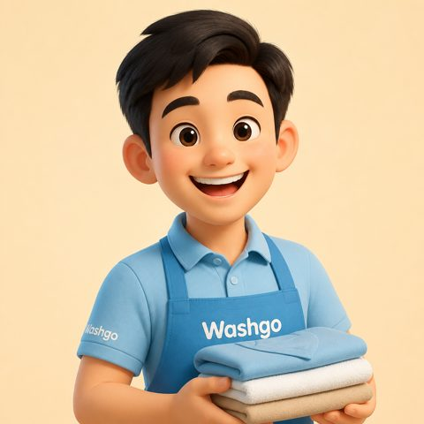
聊客人趣事和衣物進度。對洗壞會認真，其他時候輕鬆。
報修怎麼變成工單、報修怎麼轉去送洗、結案怎麼用匠城演給客人看。下面是系統裡的樣子，不是概念圖。
房客在 Homigo 拍照報修。房東決定找師傅之後，TaskGo 依範本建案、配上案號。進度、報價、結案再回到房東端。下面是這張單在修繕端的樣子。
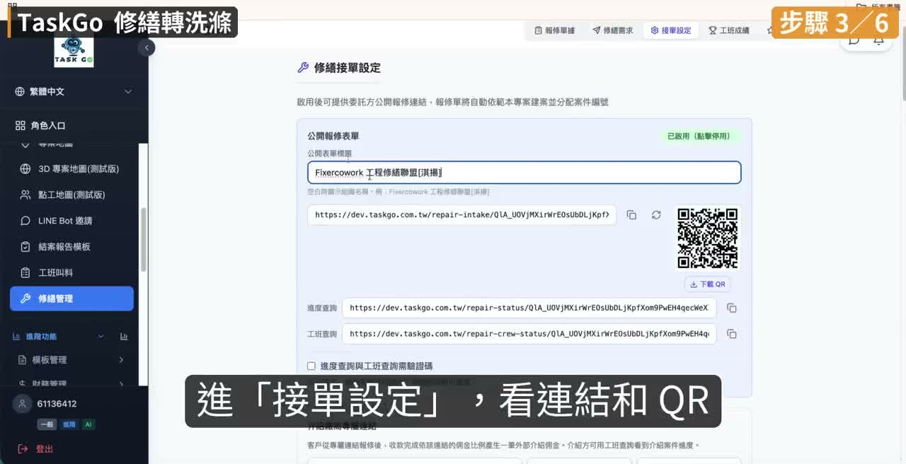
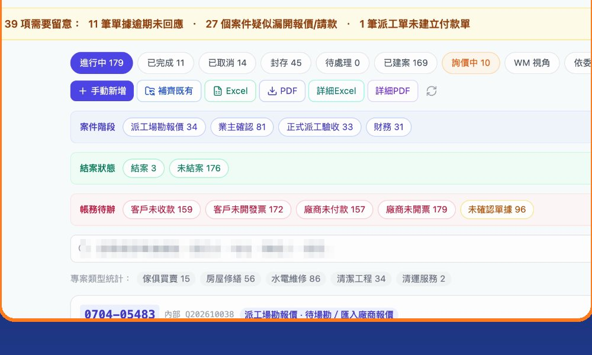
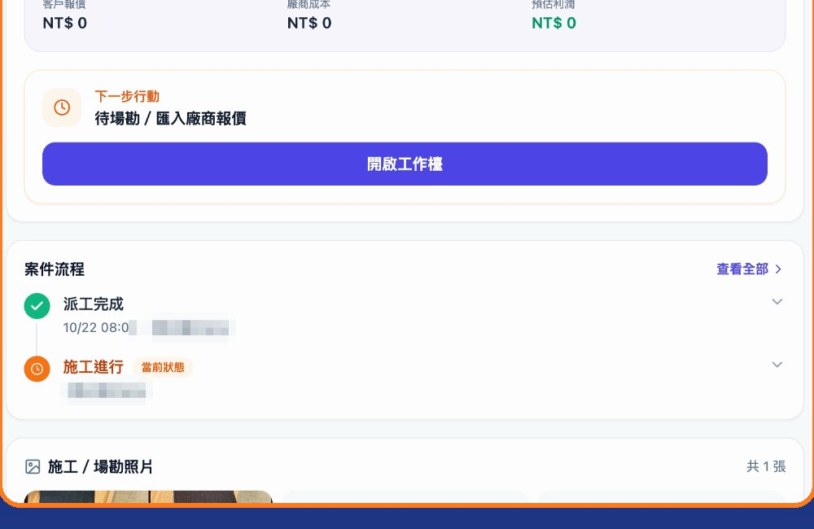
上面是修繕端的工單。房客在 Homigo 拍照報修、房東決定找師傅之後，進的就是這張單。姓名與電話已遮。
品牌在 Washgo 開放 TaskGo 轉介，客人這一單九五折。報修單選洗滌服務、選門市自取或司機送回，轉介由系統入帳。
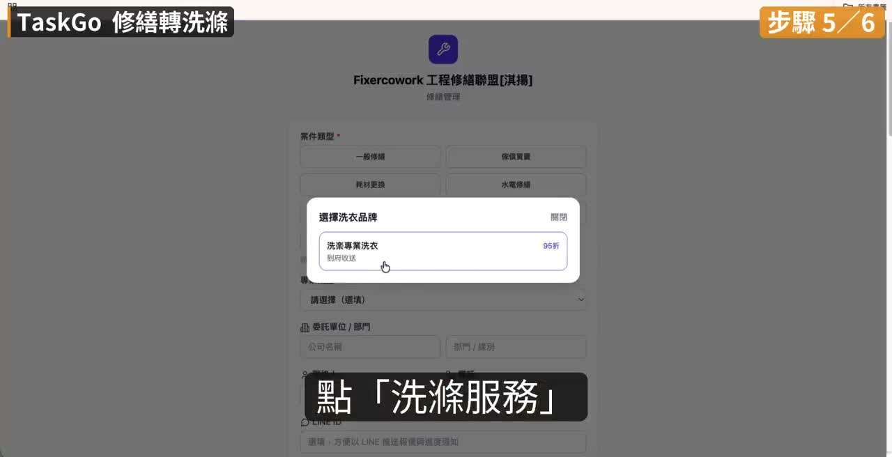
影片把六步走完：開放轉介、報修單、選品牌、門市自取或司機送回、確認送洗、轉介入帳。店名與金額為示範。
TaskGo 結案後，客人在 LINE 收到結案。打開是工程資訊、施工日期；同一份還能進匠城，從派工、GPS 打卡、施工一路看到收工，工序旁附現場照片。Washgo 查送洗進度時，收件、洗護、品管、送回也用同一套呈現。
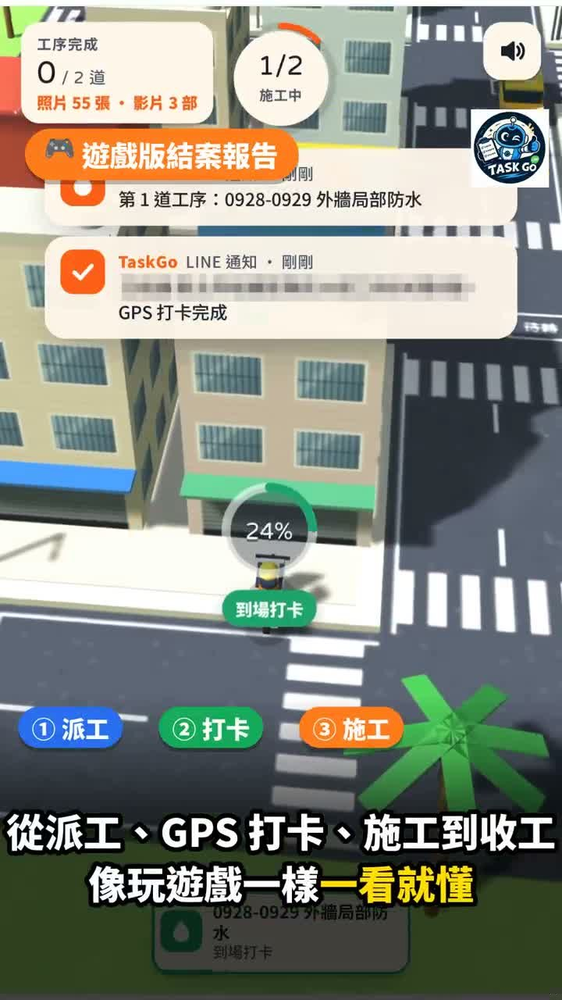
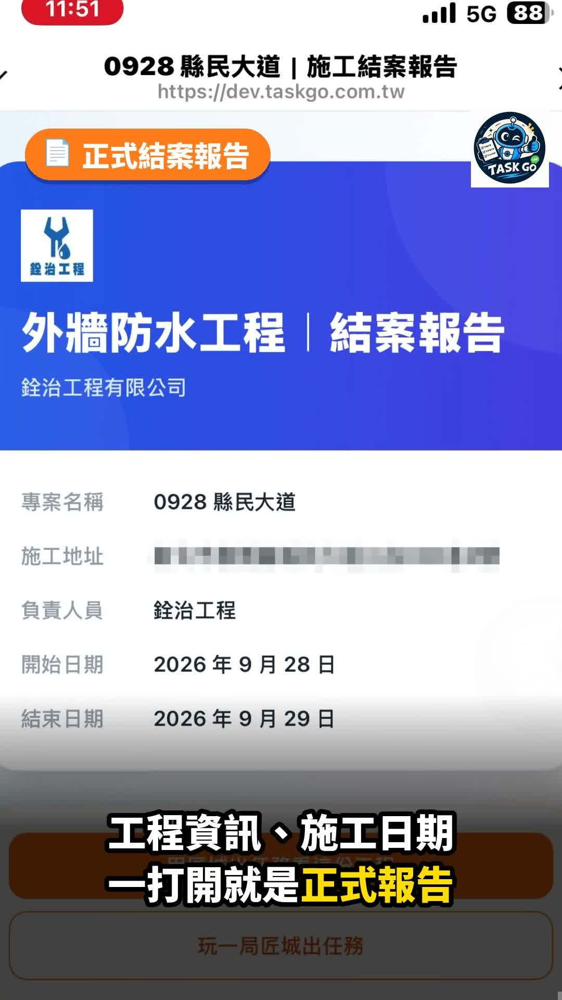
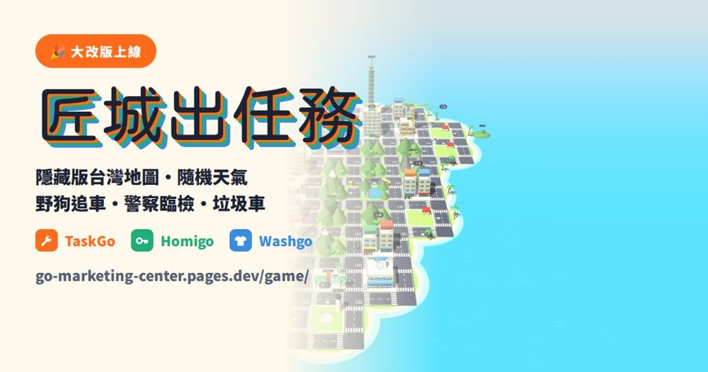
工地、租屋、洗衣店本來不相干。匠管先讓每一邊自己跑得起來，需要合作時才用 API 接上，再沿著這條路把服務變多。
TaskGo 管工作，Homigo 管居住，Washgo 管生活。店名、工班、房東的做法留在自己的系統裡。
報修進工單、修繕轉送洗、匠城呈現。上一章是這三條的實際畫面。
同一個人的房子、修繕、洗衣可以接在一起。接下來再接更多居住與生活的服務。
工程行、工班把派工、照片、簽名、請款留在同一張單。師傅用 LINE。
房東、房客、代管把招租、收租、報修、退租收回 LINE。與達觀共同推動。
洗衣品牌用 LINE 收送、報價、品管。店名、價目、會員仍然是品牌自己的。
不為了合成一個品牌，去改業者原本的店名與做法。合作發生時才串接。
房客在 Homigo 拍照報修，房東決定找師傅後，TaskGo 產生案號。進度與結案回到房東端。
TaskGo 報修單點洗滌服務，進 Washgo。門市自取或司機送回，這一單九五折，轉介入帳。
TaskGo 結案、Washgo 洗滌進度，都用匠城把工序演一遍。書面報告還在，動畫是給人看的那一層。
TaskGo、Homigo、Washgo 是進入工地、租屋、洗衣這三個產業的入口。每一個先解決一個真實問題。接得起來的先接。還沒做完的，標成逐步在做。
Homigo 的報導寫過下一步：串聯裝修、維修、清潔，以及保險與金融夥伴。方向已公開，逐步在做。
業者保持自己的品牌與做法。需要合作時才把服務接上，店名維持業者自己的。
報修分類、智慧客服、行政流程。用的是現場先留下的資料。
「Taskgo、Homigo、Washgo 是我們進入產業的入口。每一個產品先解決一個真實問題，再慢慢把不同場景串起來。」
匠管執行長 陳炳寬｜經濟日報